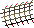

Fishing Guide
Net Fishing

Location: Found in many sea fishing locations
Required items: Net
Fishing level requirements: Shrimps 1, Anchovies 15
|
Sea bait fishing
Location: Found in many sea fishing locations
Required items: Fishing rod, fishing bait
Fishing level requirements: Sardine 5, Herring 10
|
Fly fishing
Location: Found in many river locations
Required items: Fly fishing rod, feathers
Fishing level requirements: Trout 20, salmon 30
(You will use up 1 feather every time you catch a fish)
|
River bait fishing
Location: Found in many river fishing locations
Required items: Fishing rod, fishing bait
Fishing level requirements: Pike 25
(You will use up 1 bait every time you catch a fish)
|
Harpoon fishing
Location: found in Karamja and in many sea fishing locations on the members servers.
Required items: harpoon
tuna 35, swordfish 50
|
Lobster fishing
Location: found in Karamja and in many sea fishing locations on the members servers.
Required items: lobster pot
Lobster 40
|
Big net fishing - (members only)
Location: found at Catherby and the fishing guild.
Required items: Big net
boots 16, gloves 16, seaweed 16, Mackerel 16, Oyster shell 16, Cod 23, Bass 46
|
Shark fishing - (members only)
Location: found at Catherby and the fishing guild.
Required items: harpoon
Shark 76
|
|
|